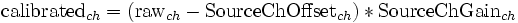

DataIOFilter
User Reference
Function
The DataIOFilter is part of every source module, and manages data acquisition, storage, and signal calibration into physical units (muV). For data acquisition, the DataIOFilter interfaces to an ADC component present inside a source module. For actual data storage, the DataIOFilter uses one of multiple FileWriter components present in a source module.
Parameters
Data Acquisition
Generally, data acquisition parameters are used for AD hardware configuration. If the software interface to the AD hardware does not allow for hardware configuration, data acquisition parameters and actual AD configuration must be synchronized manually.
SourceCh
The number of channels to digitized, and stored in the data file.
SampleBlockSize
The number of sample points that make up a BCI2000 sample block. The temporal duration of such a sample block is given by the ratio of SampleBlockSize to SamplingRate, and determines timing resolution for feedback.
SamplingRate
The number of samples per second per channel.
ChannelNames
A list of textual labels associated with channels. For EEG recordings, channel names should be electrode positions according to the 10-20 system (Fz, CPz, CP3, ...). While not mandatory, providing labels is a means to document recording locations in the data file itself, so no extra information needs to be maintained. Also, BCI2000 allows referring to channels by their labels. Thus, channel labels make it easier to avoid errors in configuring feedback parameters.
SourceChOffset, SourceChGain
Calibration information defining conversion from AD units into physical units (muV). Raw data are converted into muV according to

Common Data Storage Parameters
These are storage parameters common to all Data File Formats. For individual output file formats, additional parameters may be available.
DataDirectory
Path to an existing directory. Recorded data will be stored below that directory. The path may be absolute, or relative to the source module's working directory at startup. Usually, the working directory at startup matches the source module's executable location in the prog directory.
SubjectName
A textual ID for the subject. This text will appear in session directories, and data file names.
SubjectSession
A textual ID for the current session. Sessions correspond to data directories. The path of a session directory is constructed according to
{DataDirectory}/{SubjectName}{SubjectSession}
SubjectRun
A number indicating the current run. Runs correspond to data files. To avoid accidental loss of data, run numbers are auto-incremented to the largest unused value. Within a session directory, data file names are constructed according to
{SubjectName}S{SubjectSession}R{SubjectRun}
A data file's extension depends on its File Format.
ID_System, ID_Amp, ID_Montage
These parameters are provided for documentation purposes and may contain arbitrary text.
Visualization
VisualizeTiming
Switches display of timing information on or off. See User Reference:Timing for details.
VisualizeSource
Switches display of the raw source signal on or off.
VisualizeSourceDecimation
An integer decimation factor for the source signal display, resulting in display of every N-th sample only.
VisualizeSourceTime
The amount of time displayed in the source signal display.
SourceMin, SourceMax
For the source signal display, the minimum and maximum expected signal value in microvolts. SourceMin may exceed SourceMax to allow inversion of the signal display.
States
Running
1 while data is being processed, 0 in suspended state. Setting this state to 0 from a filter, or over the App Connector interface, will result in BCI2000 being suspended.
Recording
1 while data is being recorded, 0 otherwise. In a data file, this state will always be 1.
SourceTime
A 16-bit time stamp with a resolution of 1ms, and wrap-around occurring every 65536ms. The time stamp is set immediately after a block of data has been acquired from the AD converter.
StimulusTime
A 16-bit time stamp in the same format as the SourceTime state. This time stamp is set immediately after the application module has updated the stimulus/feedback display.